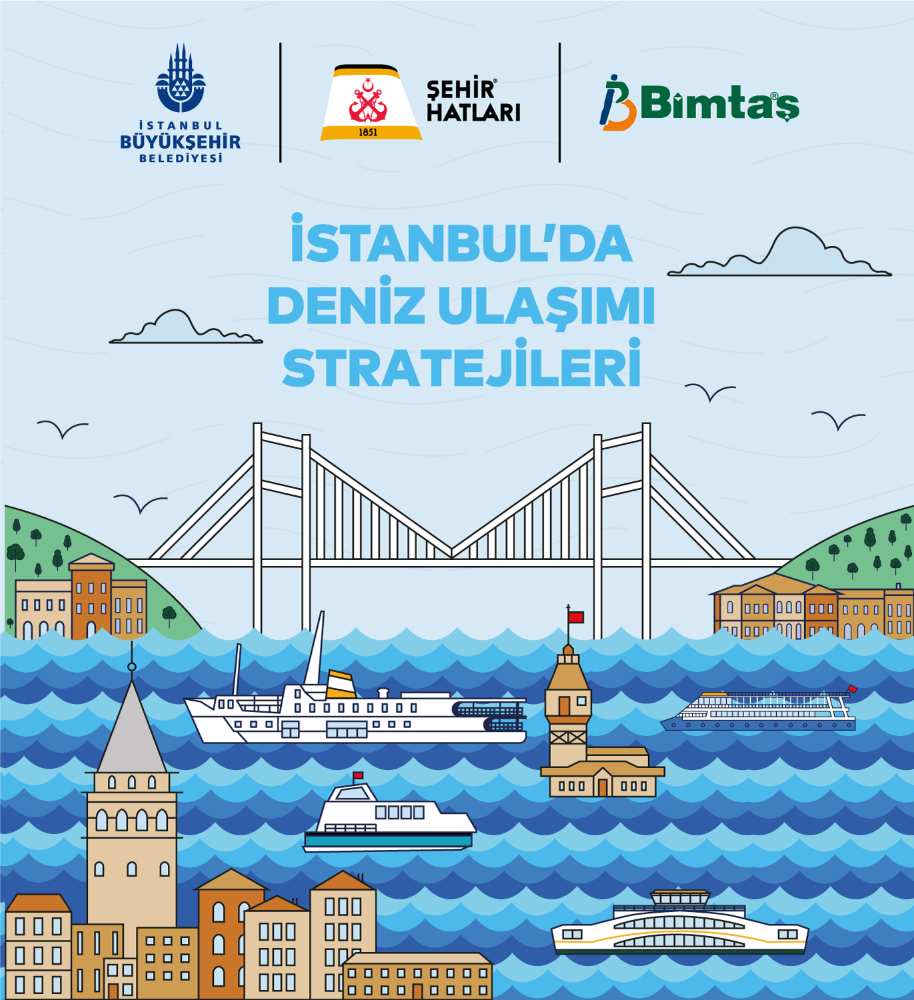
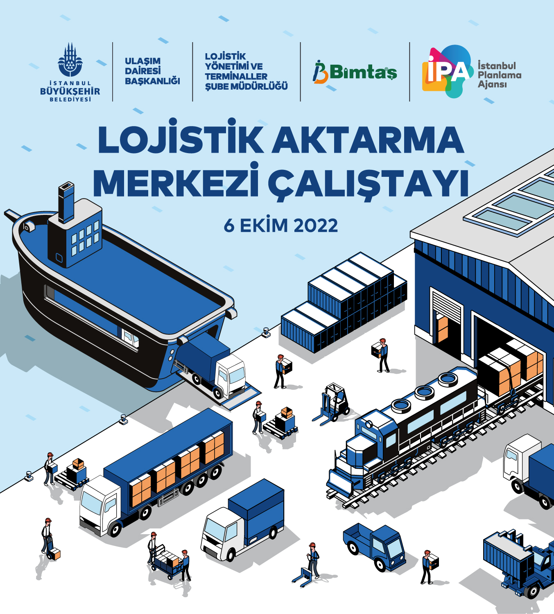
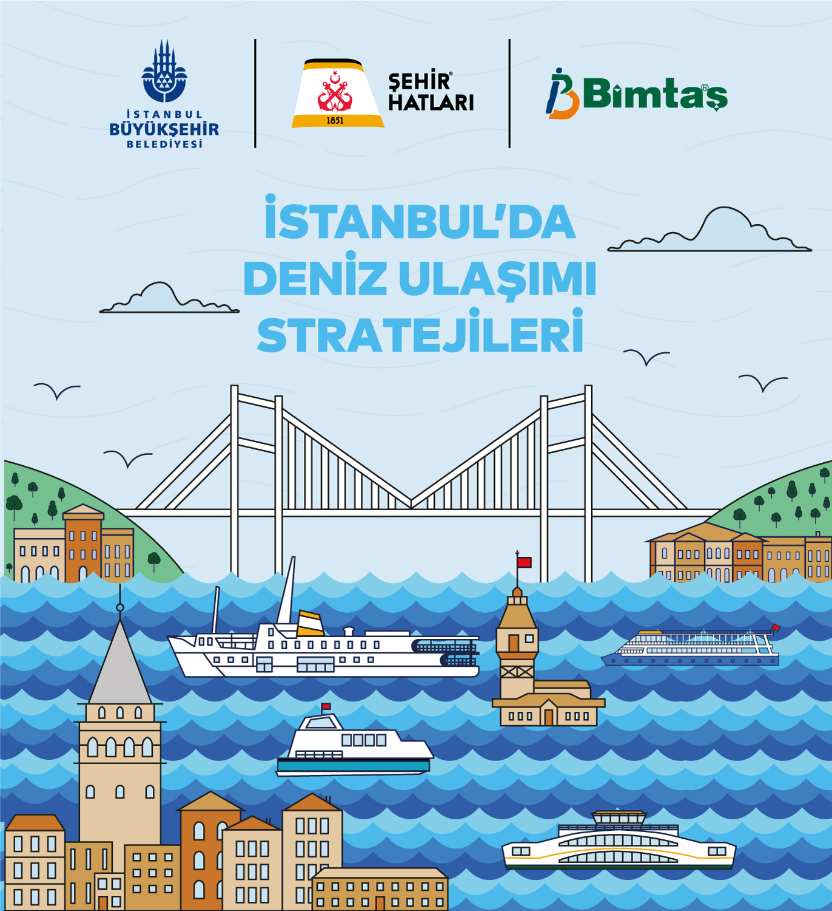
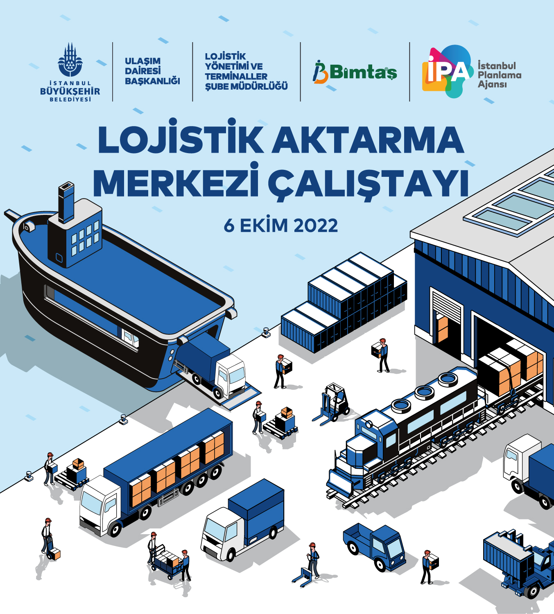

Adana Ulaşım Ana Planı
- Yeni bilgiler raporu için güncel verilerin bulunması istenilen biçimlerde tablolaştırılması ve raporunun yazılması. (Microsoft Office)
- Hane halkı anketlerinin yapılacağı konumları ve küme sayılarının belirlenmesi. (ArcMAP)
- Hane halkı anketlerinin soru düzeni ve saha çalışmasının kontrolü
- Hane halkı anketlerinden gelen verilerin analizi, geleceğe yönelik projeksiyonlanması, tablolaştırılması ve raporlanması. (SPSS, Microsoft Excel)
İstanbul Deniz Ulaşımı Ana Planı
- Ana plan raporunun yazılması. (Microsoft Office)
- Online deniz ulaşımı anketinin tasarlanması. (ArcGIS Survey123)
- Deniz ulaşım anket sonuçlarının veri temizliği, geleceğe yönelik projeksiyonlanması, analizi ve raporlanması. (Microsoft Office)
- Yapılan çalıştay ve online anket sonuçlarına göre yeni güzergahların belirlenmesi.
İstanbul Lojistik Ana Aktarma Ve Yolcu Transfer Merkezlerinin Belirlenmesi
- Lojistik çalıştayı için yüz yüze anket tasarımı, analizi ve raporlanması. (Microsoft Office)
- Yolcu transfer merkezleri için otogar anketlerinin düzenlenmesi, tasarlanması, analizi ve raporlanması. (SPSS, Microsoft Excel)
- Lojistik ana aktarma merkezi için online anket tasarıımı. (ArcGIS Survey123)
- Yolcu transfer merkezleri için geleceğe yönelik projeksiyonlama ve raporlanması. (Microsoft Excel)
- Lojistik ana aktarma merkezi için online anket sonuçlarının analizi, öncelik matrisi tasarlanması ve raporlanması. (Microsoft Excel)
 


